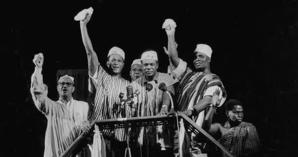
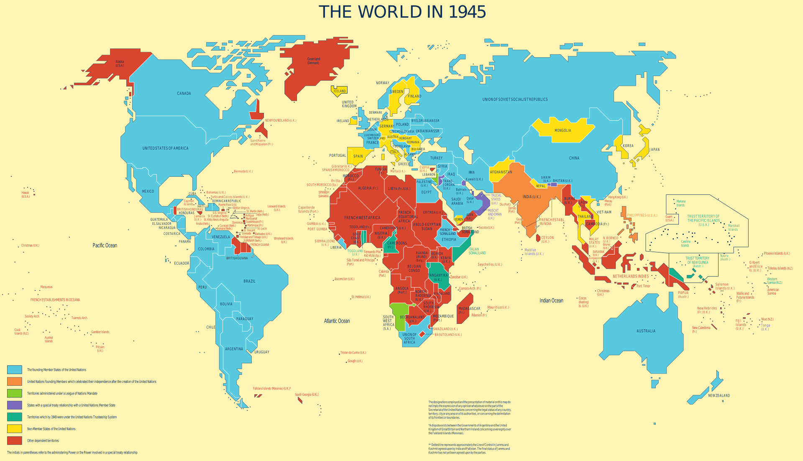
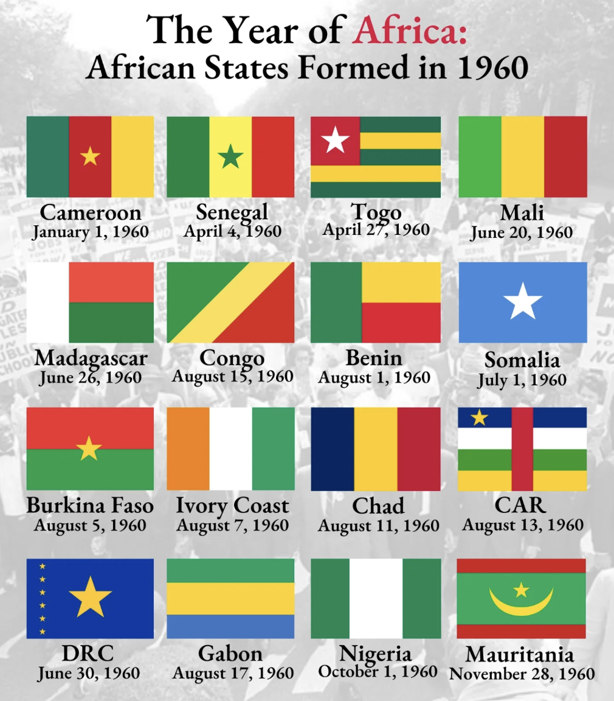
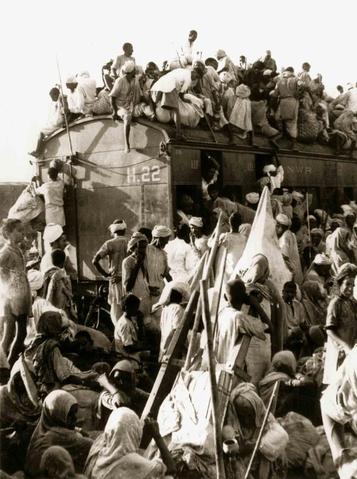
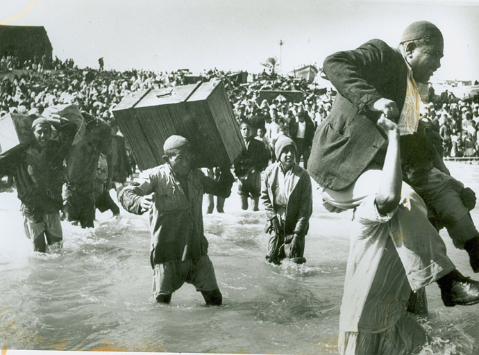
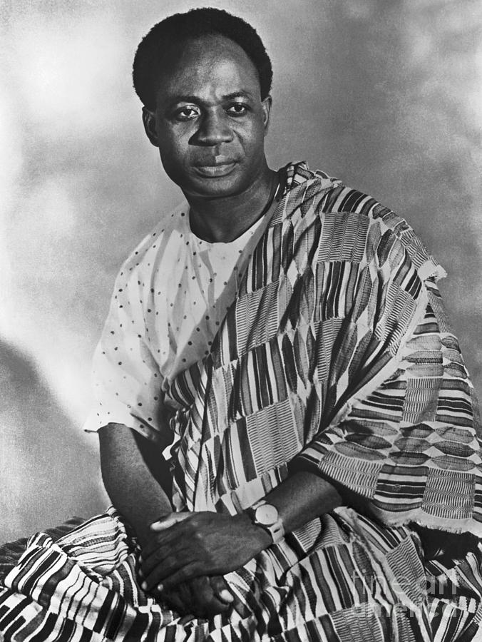
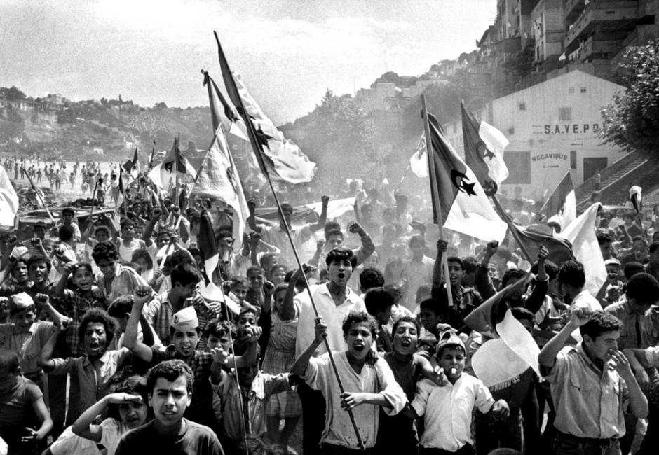
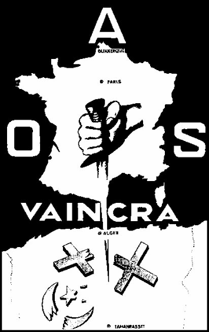
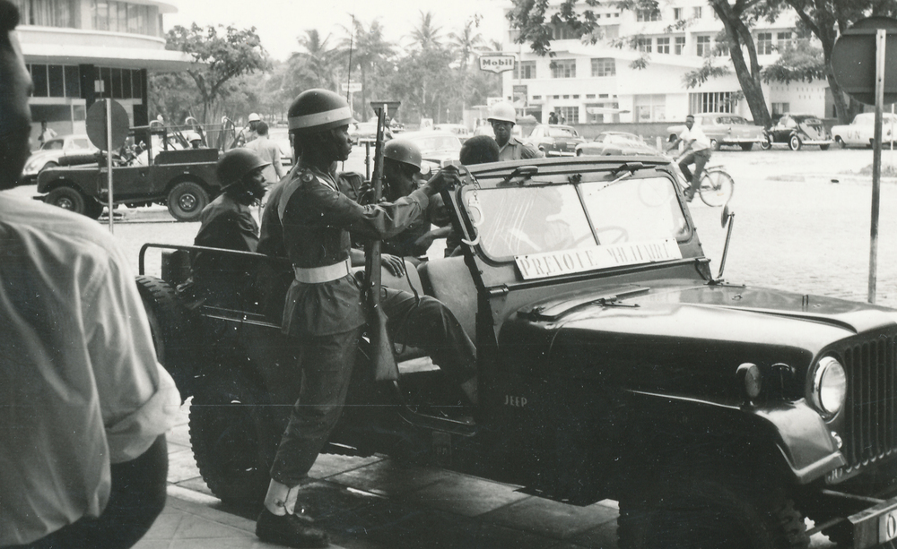

What challenges did newly independent nations face, and did independence deliver what people hoped for?
Choose a lens before reading, then track that idea across the lesson.
DECOLONIZATION TIMELINE
1945
EMPIRES WEAKEN
World War II leaves European empires exhausted and nationalist movements stronger.
1947
INDIA AND PAKISTAN
British India becomes independent but is partitioned into India and Pakistan.
1957
GHANA
Ghana becomes the first sub-Saharan African nation to gain independence.
1960
CONGO CRISIS
The Congo becomes independent, then faces crisis, foreign pressure, and Lumumba's assassination.
1962
ALGERIA WINS
Algeria gains independence after a brutal war against France.
1980
NEW NATIONS
More than 80 new nations have emerged in the global wave of decolonization.
MIDNIGHT IN ACCRA
Just before midnight on March 5, 1957, crowds gathered in Accra to watch a colony become a country. When the new flag rose, people cheered because Ghana was no longer ruled by Britain. Kwame Nkrumah told the crowd that Ghana's independence was meaningless unless it connected to the freedom of all Africa. In that moment, independence felt like a door opening.
Just before midnight on March 5, 1957, people gathered in Accra, Ghana. They watched a colony become an independent country. When the new flag rose, people cheered because Britain no longer ruled Ghana. Kwame Nkrumah said Ghana's freedom mattered for all of Africa. In that moment, independence felt full of hope.

Delegates from newly independent nations helped reshape the United Nations. Source: Wikimedia Commons.
But independence did not automatically solve the problems created by empire. New countries inherited borders, economies, armies, and political systems shaped by colonial rule. Many people expected decolonizationThe process of colonies gaining independence from imperial powers. to bring dignity, control, and self-determinationThe right of a people to choose their own government and future.. Those hopes were real, but so were the obstacles. Newly independent nations had to build stable governments while powerful countries still tried to shape their choices.
Independence did not fix everything right away. New countries inherited borders, economies, armies, and governments shaped by colonial rule. Decolonization means colonies gaining independence. Self-determination means people choosing their own future. People hoped independence would bring dignity and control, but new countries still faced serious problems.
EMPIRES FALL AFTER WORLD WAR II
Between 1945 and 1980, more than 80 new nations were created as European empires collapsed. World War II had weakened Britain, France, Belgium, the Netherlands, and other imperial powers. Colonized people had fought, worked, and sacrificed during the war, yet many were still denied political rights. NationalismPride in a shared identity and the desire for political independence. grew stronger as people demanded control over their own lands. The Cold War also made empire harder to defend because both the United States and the Soviet Union claimed to support freedom, even while they often pursued their own interests.
From 1945 to 1980, more than 80 new nations were created. European empires became weaker after World War II. Colonized people had helped fight and work during the war, but they still did not have full rights. Nationalism grew as people demanded control of their own land. The Cold War also made empires harder to defend because powerful countries said they supported freedom, even when they acted for themselves.

Map of global decolonization after World War II. Source: Wikimedia Commons.
The word nation-stateA country where government and national identity are meant to match. became important because new governments had to unite people inside borders that often did not match local identities. Colonial powers had drawn many borders for their own convenience, not for the people who lived there. In some places, those lines placed rival ethnic, religious, or linguistic communities inside one state. In other places, they divided communities across several countries. Independence gave people flags and governments, but it did not erase the borders empire left behind.
The idea of a nation-state became important. A nation-state is a country where the government and national identity are supposed to fit together. Many new countries had borders drawn by colonial powers. Those borders often did not match the people who lived there. Some rival groups were placed inside the same country. Other communities were split across different countries.
DID YOU KNOW

United Nations General Assembly during the decolonization era. Source: Wikimedia Commons.
Decolonization changed the sound of world politics. The United Nations had been dominated by older powers at first, but as new countries joined, leaders from Asia, Africa, the Caribbean, and the Middle East could speak for themselves on a global stage.
PARTITION AND BORDERS CUT INTO LIVES
India's independence in 1947 showed both the joy and danger of decolonization. British India became independent, but it was split into India and Pakistan in a process called partitionDividing a territory into separate political states.. The borders were drawn quickly, and millions of Hindus, Muslims, and Sikhs fled or were forced to move. Communal violence killed up to 2 million people. Independence delivered freedom from British rule, but partition also created trauma, displacement, and conflict that shaped South Asia for generations.
India became independent in 1947, but independence also brought danger. British India was divided into India and Pakistan. This division was called partition. The borders were drawn quickly. Millions of Hindus, Muslims, and Sikhs moved or were forced to move. Up to 2 million people died in violence. Independence ended British rule, but partition caused deep pain.

Refugees during the Partition of India, 1947. Source: Wikimedia Commons.
The end of the British Mandate in Palestine also left a conflict that would shape the modern Middle East. Jewish people had faced centuries of antisemitism in Europe, and the Holocaust intensified support for a Jewish homeland. In 1948, the State of Israel was created and war broke out with neighboring Arab states. Hundreds of thousands of Palestinians fled or were expelled from their homes in what Palestinians call the NakbaArabic for catastrophe; the Palestinian displacement during the 1948 war.. For Israelis, 1948 became a story of survival and statehood; for Palestinians, it became a story of loss, displacement, and an unfinished struggle for self-determination.
Palestine was also shaped by the end of British rule. Jewish people had faced antisemitism in Europe, and the Holocaust made many people support a Jewish homeland. In 1948, Israel was created and war began. Many Palestinians fled or were forced from their homes. Palestinians call this the Nakba, which means catastrophe. For Israelis, 1948 meant survival and statehood. For Palestinians, it meant loss and displacement.

Palestinian displacement during the 1948 war, remembered by Palestinians as the Nakba. Source: Wikimedia Commons.
FAST FACTS
DECOLONIZATION IN NUMBERS
80+new nations were created between 1945 and 1980 as empires collapsed across the world
1947the year British India became independent and was divided into India and Pakistan
2Mpeople may have died in partition violence, showing that independence could arrive with catastrophe
1957Ghana became the first sub-Saharan African nation to gain independence from colonial rule
1960the Congo gained independence but quickly faced crisis, foreign interference, and political violence
BUILDING A COUNTRY AFTER EMPIRE
After independence, leaders faced the hard work of nation-building. They needed to write constitutions, build schools, train officials, manage armies, create courts, and convince people that the new government belonged to them. Colonial rule had often limited local political experience, so new leaders had to build institutions quickly. Many countries also inherited economies designed to export raw materials to Europe rather than develop local industries. Political freedom was real, but economic dependence could continue in new forms.
After independence, leaders had to build new countries. They needed constitutions, schools, courts, trained officials, and armies. They also had to convince people that the new government represented them. Colonial rule had often kept local people out of power, so new governments had to learn quickly. Many economies were built to send raw materials to Europe instead of helping local development.

Building new governments was one of the first challenges facing newly independent nations. Source: Wikimedia Commons.
This problem is sometimes called neo-colonialismControl over a country through money, trade, or pressure after formal empire ends.. A country could have a flag, anthem, and president but still depend on foreign banks, foreign companies, or foreign markets. If colonial railroads had been built to move minerals to ports, the new government still had to decide how to build roads, schools, hospitals, and factories for local needs. If one crop or mineral dominated the economy, a price drop could damage the entire country. Independence opened possibilities, but empire had left a difficult structure behind.
Neo-colonialism means control after empire through money, trade, or pressure. A country might have its own flag and president but still depend on foreign banks, companies, or markets. Colonial railroads often moved minerals to ports instead of connecting communities. New governments had to build roads, schools, hospitals, and factories for their people. Independence created new possibilities, but colonial systems were hard to escape.

Algerian independence came after a brutal war against France, 1954 to 1962. Source: Wikimedia Commons.
ART SPOTLIGHT

Algérie Vaincra : FLN anticolonial poster, 1950s to 1960s.
Posters from the Algerian independence struggle used bold images and short messages to turn anticolonial resistance into a public visual language.
Independence art did more than decorate a movement. Posters could travel across walls, newspapers, meetings, and classrooms, turning a political demand into something people could see before they could vote on it.
COLD WAR PRESSURE AND BROKEN PROMISES
Newly independent nations also had to survive in a world divided by the Cold War. The United States and the Soviet Union competed for allies, military bases, resources, and influence. This competition turned some new countries into battlegrounds of geopoliticsHow geography, power, resources, and strategy shape world politics.. Leaders who wanted independence from both sides often faced pressure to choose. When powerful countries interfered in elections, armies, or governments, independence became harder to protect.
New countries also had to deal with the Cold War. The United States and the Soviet Union competed for allies, bases, resources, and power. Geopolitics means how geography, resources, and power shape world politics. Some new countries became places where powerful countries competed. Leaders who wanted to stay independent often faced pressure to choose a side.
Patrice Lumumba during the Congo independence era, 1960. Source: Wikimedia Commons.
The Congo showed how dangerous this pressure could become. Belgium granted independence in 1960 after decades of brutal colonial rule, but the new country quickly entered crisis. Patrice Lumumba, the Congo's first prime minister, demanded real independence and control over the country's resources. Cold War powers feared what his leadership might mean, and he was assassinated in 1961 after a crisis involving Belgian action and CIA support for efforts against him. This became one of the clearest examples of Cold War interferencePowerful Cold War countries shaping another country's politics for their own goals..
The Congo showed how dangerous outside pressure could be. Belgium gave the Congo independence in 1960 after brutal colonial rule. Patrice Lumumba became the Congo's first prime minister. He wanted real independence and control over Congo's resources. Cold War powers feared his leadership. He was assassinated in 1961 after a crisis involving Belgium and CIA support for efforts against him.
Military coupsSudden takeovers of government, usually by military leaders. also replaced elected governments in many newly independent countries. Some coups came from local conflicts, but many were encouraged or supported by outside powers. A leader could be judged less by whether he served his people and more by whether he helped one Cold War side. This did not mean independence was fake or meaningless. It meant independence was often a struggle that continued after the flag was raised.
Military coups also removed elected governments in many new countries. A coup is when a group, often the military, suddenly takes power. Some coups came from local problems. Others were encouraged or supported by outside powers. During the Cold War, powerful countries often cared more about loyalty than democracy. Independence still mattered, but protecting it was hard.

Soldiers of the Congo Crisis era reflect how military power and Cold War rivalry shaped many new nations. Source: Wikimedia Commons.
PRIMARY SOURCE MOMENT
Citizens gathered to celebrate Ghana's independence, March 1957. Source: Wikimedia Commons.
PRIMARY SOURCE
“At long last, the battle has ended! And thus Ghana, your beloved country, is free forever. And here again, I want to take the opportunity to thank the chiefs and people of this country, the youth, the farmers, the women who have so nobly fought and won this battle. Also I want to thank the valiant ex-servicemen who have so cooperated with me in this mighty task of freeing our country from foreign rule and imperialism.”
Kwame Nkrumah, speech at Ghana's independence celebration, March 6, 1957.
Nkrumah's speech shows the hope of decolonization. He names many groups who helped win independence, and he describes freedom from foreign rule as a shared victory. The source helps us ask whether that victory could deliver everything people expected from it.
IN SIMPLE TERMS: Nkrumah is saying that Ghana's freedom was won by many ordinary people, not just one leader.
EVIDENCE CHECK
What does Nkrumah's speech suggest people hoped independence would deliver?
This box is for thinking only. It does not save your writing.
THEN AND NOW
INDEPENDENCE RAISED THE FLAG; NATION-BUILDING HAD TO BUILD THE FUTURE.
1957
Delegates from newly independent nations helped reshape the United Nations. Source: Wikimedia Commons.
NOW
Modern civic leadership and regional cooperation in Africa. Source: Wikimedia Commons or compatible free license.
THEN
In 1957, Ghana's independence represented a major victory over empire. It inspired people across Africa and showed that colonial rule could be defeated. The celebration was real because political freedom mattered deeply.
NOW
Today, many formerly colonized nations continue the work of building stronger governments, economies, schools, and regional partnerships. Young leaders, organizers, voters, educators, and community members are part of that ongoing work. This image shows agency because the future is not only shaped by former empires; it is shaped by people building public life now.
CONNECTION
The connection is that independence was a beginning, not a finish line. New nations gained the right to govern themselves, but they also inherited problems created by empire and made worse by Cold War interference. Decolonization delivered real freedom, but the hopes of independence required long-term nation-building.
What should count as true independence: a flag, a government, economic control, safety, or something else?